Case study · UX Research / UX Design
Help surface insights for different types of users
Possip helps school leaders hear the voice of parents through short SMS pulse checks. In three years it grew from a team of 5 with 7 customers to a team of 50 with 1,000 — and the platform had to adapt to rapid growth to fit the customers’ needs. Possip needed a design solution that would let them seemlessly scale in the future.
- Role
- UX Researcher & UX Designer
- Duration
- 3 months, end to end
- Research
- 15 interviews, 3 user groups
- Testing
- 10 participants, 8 tasks
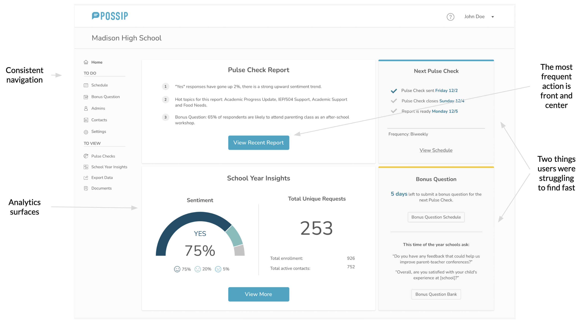
Discovery
Designing on as needed basis led to inconsistencies and redundant user flows.
- Navigation item names and order changed from page to page.
- The page a user was on was not always highlighted in the menu.
- Only one link on the homepage was actively clicked.
- School admins, district admins and Possip's own team all used the same screens for very different jobs.
Website analysis
Menu consistency and visibility.
Navigation item names and order are not consistent
The homepage shortcuts and the main menu used different words, in a different order, for the same six destinations.
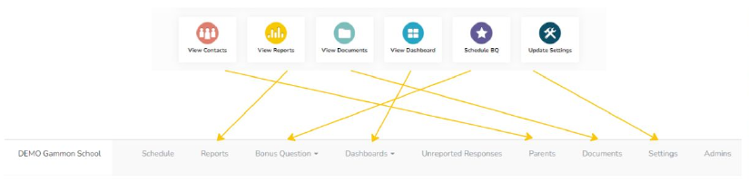
Names are not consistent
“View Contacts” became “Parents”; “Schedule BQ” became “Bonus Question Bank.”
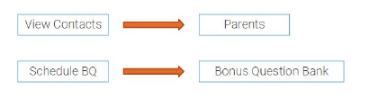
User interviews
15 interviews across three groups, before touching a pixel.
6
school admins
3
district admins
6
Possip global admins
The interviews produced customer personas, customer journeys, a user flow and the design goals that guided every later decision.
User personas
Why people use the platform, and how that shapes their decisions.
| Persona | Scope & access | Driving question | What they ask | Relies on | In their words |
|---|---|---|---|---|---|
| BrianSchool Principal | 1 schoolSchool Admin role | Are students well at my school? |
| Comments | “When I think of how to make actionable items for my team, I look at the comments for answers.” |
| MichelleFamily Engagement Coordinator | 2 schoolsSchool Admin role | Are parents' voices heard? |
| CommentsData | “I help schools connect to families.” |
| SarahDistrict Strategy and Innovation Initiatives | 112 schoolsDistrict Admin role | How do I pull valuable insights for leadership? |
| Data | “How can we use the platform to reach the district's goals?” |
User journeys
The reporting cycle, stage by stage, and where attention dropped off.
| Persona | Login | Look at the report | Follow up | Next steps | Add a bonus question | Next survey |
|---|---|---|---|---|---|---|
| Principal & Family Engagement |
Forgot password |
Stuck, if too many comments |
|
Create actionable items · Make sure all is solved |
How do I create a good question? |
Not sure when the survey goes out |
| District Strategy |
|
Can I see valuable insights? |
|
Stress · Hard to find specific data |
|
|
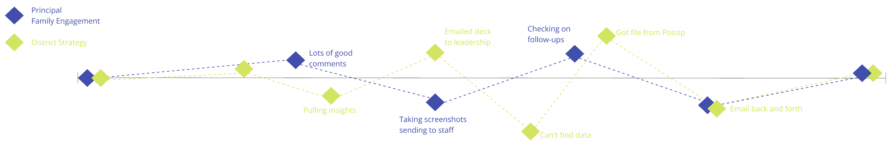
Key findings
When there are a lot of comments, they are hard to read.
- The same comment shows multiple times.
- There is no good way to see multiple comments from the same person (currently, the second comment is shown in the place of the translation).
- There is no way to track which comments have been read.
“The comment is in English, and it shows translation below, still in English.”
“It is not the easiest for me to keep track of what I've read and what I haven't.”
“I like how it elevates the things that are of greater importance, so the school doesn't have to read all the responses, because they don't have the time.”
Current users' solutions
- Print out
- Print out the comments and use color coding to structure them and mark read/submitted for follow up.
- Excel file from Possip
- Download all comments in the Excel document from Possip, structure them, mark read, submit for follow up.
- Copy and paste into Google Doc
- Comments that need to be followed up upon are copied, along with the contact information, into a Google Doc. Then shared with the team and tracked for the follow-up status.
Design goals
A landing page for each persona, built inside the existing style and structure.
Homepage as a dashboard
Insights surfaced per persona, not one generic welcome screen.
Work within the current style
Recognizable and intuitive: a smooth transition to the new solution.
Consistency across all pages
Same navigation, same order, page name always visible.
Work within the current structure
A new “skin” that affects the backend as little as possible.
Old design
Only one link on the homepage was actively clicked, and navigation changed from page to page.
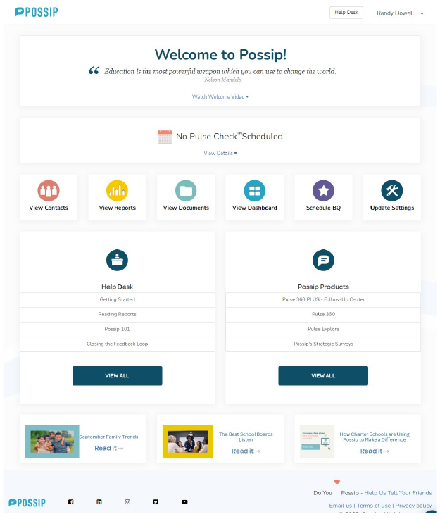
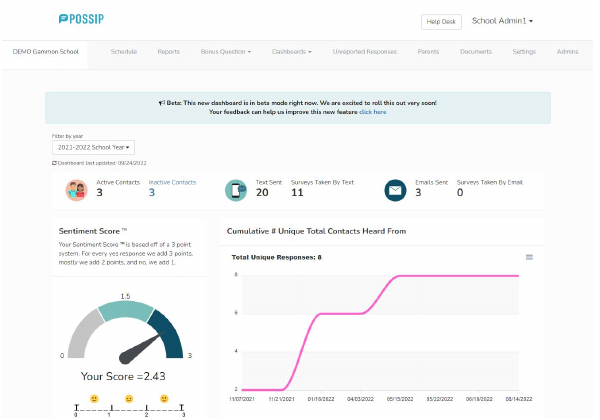
New design
The homepage becomes a dashboard, showing insights for each persona.

Consistent navigation
Grouped into “To do” and “To view”, identical on every page.
The most frequent action is front and center
“View Recent Report” sits in the first card.
Two things users were struggling to find fast
Analytics and the next pulse check date now surface on the homepage.
Design improvements
Three report pages consolidated into one page with two tabs.
- Consistent navigation.
- Breadcrumbs: a clear way back.
- Consolidated 3 pages into 1 page with 2 tabs.
- Design improvements aligned with the existing style.
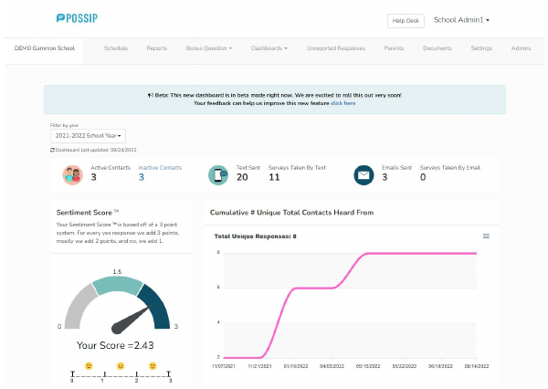
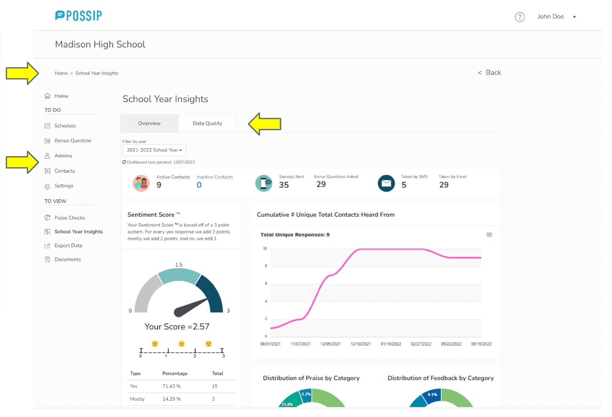
Usability testing
Can users navigate the platform easily, and find their way back?
How we tested
Moderated sessions over Google Meet with participants sharing their screen. Eight tasks, from viewing a recent report to adding a bonus question, updating contacts and changing a password.
Who we tested with
10 participants: 6 users (3 current and 3 past Possip reporters) and 4 non-users (2 developers, 1 designer, 1 administrator).
Research findings
It's not always clear that Year to Date insights are in the Dashboard.
When asked to navigate to a page with Year to Date insights and analytics…
60%
successfully navigated to Dashboard
20%
found it on the second try
20%
failed to find the page (non-Possip users)
Solution
- Rename “Dashboard” into “School Year Insights.”
- Create a guide with helpful hints, shown when the user first logs in or views their first report.
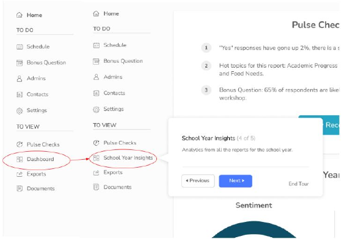
Iteration
Overall feedback was positive, and two labels moved as a result.
“I like how clean the page looks.”
“I like the pulse check dates on the right, because we sometimes forget and need to look them up.”
- Positive overall feedback.
- 80% looked for “change password” in Settings instead of Account → added “change password” to Settings.
- 60% navigated to Dashboard on the first try → renamed Dashboard into School Year Insights.
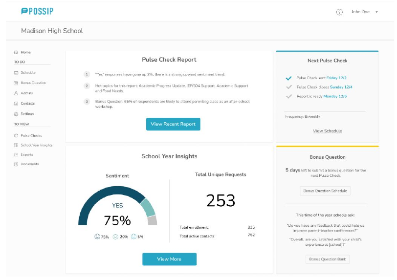
Solution for district accounts
District leaders needed to open individual schools — and get back.
Task: A district leader should be able to see individual school accounts, switch between different schools, and be able to come back to the district account.
Solution
- The school account opens in a new window.
- A dropdown menu allows switching between schools.
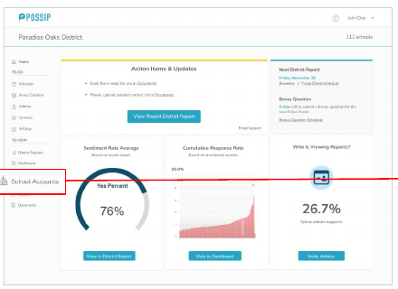
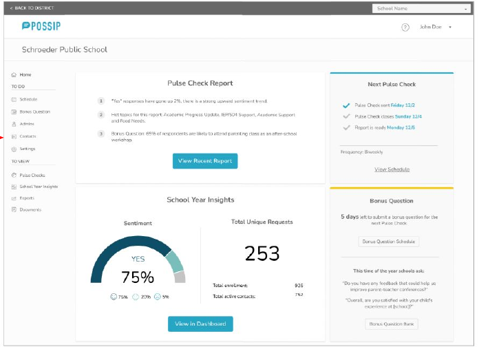
Usability improvements
Six improvements delivered, all inside the existing style guide.
1. Consistency
Menu order, page and item names.
2. Visibility of page name
Page name is always visible, in the same place. The menu item is always highlighted.
3. Clear and visible way back
Breadcrumbs and other hints to lead the user back up the navigation tree.
4. Switching between District and School
Clearly define when a user is under a district menu and when they are switched to a school menu.
5. Initial guidance through the platform
Hints that help a user learn the platform after receiving their first Pulse Check report.
6. Separate user flow for new users / new school year
Step-by-step guidance to encourage users to fill out details in Settings and submit information to Possip to start Pulse Checks.
Results
What the redesign accomplished, in the client's own numbers.
25%
fewer simple customer service requests, taking load off the support team
15%
shorter onboarding for new customers thanks to easier navigation
50%
less time and support effort for accounts with no data yet
5
layouts improved for faster navigation and a better experience
What I'd carry forward
The highest-value changes were not new features. They were labels that matched the words users said in interviews, a homepage that answered the question each persona arrived with, and a designed empty state for accounts with no data. All of it fit inside the existing style guide and left the backend nearly untouched.
More notes on small fixes →